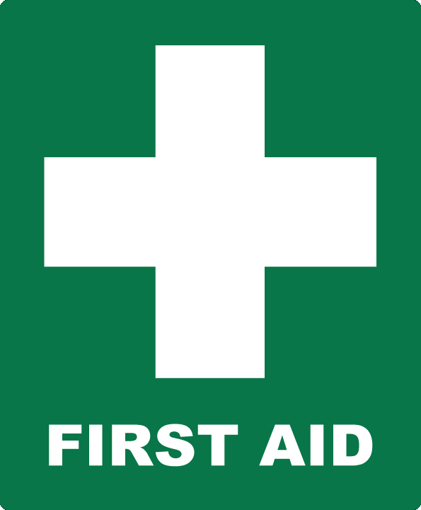
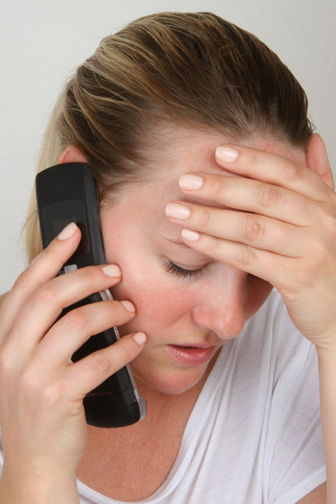
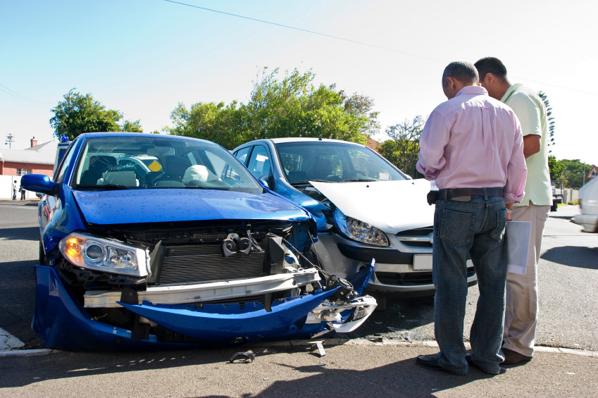
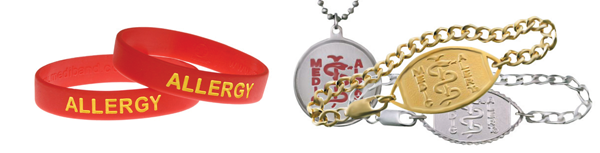
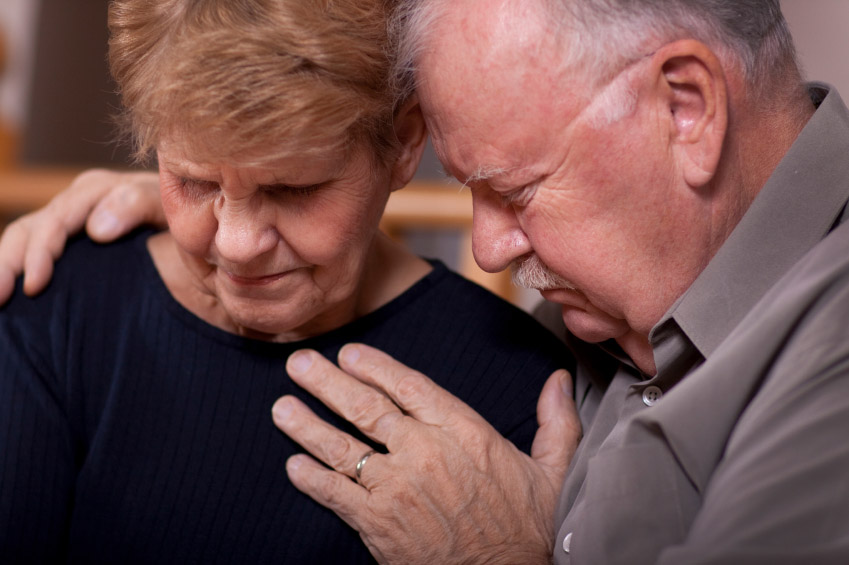

<!DOCTYPE HTML PUBLIC "-//W3C//DTD HTML 4.01 Transitional//EN"/>
<!--this doctype can simply be <HTML> in HTML 5-->
	
<html>
<head>
    <meta http-equiv="Content-Type" content="text/html; charset=UTF-8" />
    <!-- mobile safari specific viewport-->
	<meta name = "viewport" content = "width=device-width, initial-scale=1.0, user-scalable=yes" />
    <title>Principles of First Aid</title>
	<link href="css/parasol.css" rel="stylesheet" type="text/css" />
<script type="text/javascript" src="js/jquery-1.4.2.js"></script>
<script type="text/javascript" src="js/jquery.highlight-3.js"></script>
<script type="text/javascript">
myword = '';
function highlight(hword){
$('p').highlight(hword);
};
</script>
<STYLE TYPE="text/css">
/*JS highlighting style*/
.highlight { background-color: yellow }
</STYLE>
</head>
<body>
<div style=max-width:1024px> 
	<p class="headline">Principles of First Aid</span></p>
  First aid is an important part of everyday life, both at home, work or at play. Everyone should learn first aid and be willing to administer basic care until emergency assistance arrives. Not every incident requiring first aid is a life-and-death situation. First aid knowledge is commonly used to manage minor injuries at home or work.<br>
  <br>
  <span class="bluebold">What is First Aid?</span><br>
  <br>
  First aid is the immediate care of an injured or suddenly sick person. It is the care a person applies as soon as possible after an accident or sudden illness. <br>
  <br>
  This prompt care and attention prior to the arrival of the ambulance can sometimes mean the difference between life and death, or between a full or partial recovery. <br>
  <br>
  The main aims of first aid are to:<br>
  <br>
  <span class="bodybold">1.</span> Preserve life - This includes the life of the casualty, bystander and rescuer.<br>
  <span class="bodybold">2.</span> Protect the casualty from further harm - Ensure the scene is safe.<br>
  <span class="bodybold">3.</span> Provide pain relief - This could include the use of ice packs or simply applying a sling.<br>
  <span class="bodybold">4.</span> Prevent the injury or illness from becoming worse - Ensure that the treatment you provide does not make the condition worse.<br>
  <span class="bodybold">5.</span> Provide reassurance.<br>
  <br>
It is important to understand that first aid has its limitations and does not take the place of professional medical treatment. </p>
<p><span class="bluebold">Immediate action</span><br>
  <br>
  Taking immediate action is the essential principle in first aid. Bystanders or relatives may not recognise the basic symptoms of an injury or illness and may wait hours before calling for help. Often people are worried about &quot;doing the wrong thing&quot;, so don't attempt any first aid at all. If a person is sick or injured, then they need help, and they need it immediately.<br>
  <br>
  A casualty who is not breathing effectively, or is bleeding heavily, requires immediate assistance. Prompt effective first aid gives the casualty a much better chance of a good recovery.<br>
  <br>
  It is important that prompt action does not lead to panic, and the first aider should form a plan of action. Careful and deliberate action undertaken without too much delay is most beneficial to the casualty. Try to remain calm and think your actions through. A calm and controlled first aider will give everyone confidence that the event is being handled efficiently and effectively.<br>
  <br>
  Each emergency is different, so it is impossible to provide you with a precise list of things you need to do for every emergency. However, if you follow the 'principles of first aid' as outlined, you should deliver appropriate care, even if you are not sure of what the underlying problem is.<br>
  <br>
  <span class="bluebold">Getting help</span><br>
  <br>
Triple Zero <em><span class="bodybold">(000)</span></em> is Australia's primary Emergency Call Service number and should be used to access emergency assistance from all telephones (landline, mobile phones and payphones) in the first instance.<br>
<br>
<span class="bluebold">Alternative ways to call for help</span><span class="headline"><br>
</span><br>
<em><span class="bodybold">'112'</span></em> is the GSM standard Emergency Call Service number for use with GSM mobile phones, and offers special access features. 112 can also be dialled from other mobile phones, but will only offer the same features that dialling Triple Zero <em><span class="bodybold">(000)</span></em> provides.<br>
<br>
Another feature of the 112 system is that it can be dialled from anywhere in the world with GSM coverage and is then automatically translated to that country's emergency number.<br>
<br>
112 can also be dialled in any network coverage area (for example, in Australia, it could be dialled on an Optus mobile that is out of coverage and be connected to the emergency number by Vodafone where there is coverage) and this is even without the presence of a SIM card or having the PIN number for the phone.<br>
<br>
'106' is the text-based Emergency Call Service for people who are deaf or have a hearing or speech impairment. This service operates using a TTY (teletypewriter) and does not accept voice calls or SMS messages.<br>
<br>
Both 112 and 106 are secondary emergency call services numbers because they are for use only in relation to particular technologies.<br>
<br>
In a workplace there may be an internal number to call in an emergency which should be clearly displayed on or around the telephone.<br>
<br>
Freeways and major roads have emergency phones that are marked by blue signs and with an arrow to point you in the direction of the nearest phone. These are linked to control centres, allowing them to pinpoint your position and get help to you quickly.<br>
<br>
There are many other methods of calling for help that can be considered when a telephone is not available. These include:<br>
  <br>
   satellite phones <br>
   two way radio <br>
   flags <br>
   Personal Locator Beacons (EPIRBS)<br>
   HF/VHF radio <br>
   email <br>
   flares<br>
  <br>
  If you are attending to a casualty, have a bystander telephone for help. If you are on your own you may have to leave the casualty for a short time to make a call. <br>
  <br>
  The specific circumstance surrounding the incident will dictate whether you call for help, or whether you send a bystander.<br>
  <br>
  <br>
  <br>
  You should instruct the bystander to give some basic information to the operator, and get them to repeat it back to you to ensure that the correct information is understood.  The caller should return and inform the first aider that help has been called.<br>
  <br>
  <span class="bodybold">There are 3 important things to remember when calling for help:<br>
  </span><br>
  <span class="bodybold">1.</span> State which emergency service you want: Ambulance, Fire, or Police.<br>
  <span class="bodybold">2.</span> Stay on the line until connected with the emergency service operator as they will need to talk to you before sending assistance.<br>
  <span class="bodybold">3.</span> Give as much information as possible about the location of the emergency. The information required will depend on whether you are in an urban or rural area, and include:<br>
  <br>
   exact address or location <br>
   street name and number <br>
   suburb, city/town <br>
   nearest cross road or street <br>
   landmarks and distance from landmark, intersection or roadside box/number <br>
   caller's name <br>
   phone number from where the call is being made <br>
   what happened, eg. car accident <br>
   number and condition of the casualties, including level of consciousness, breathing and circulation<span class="bluebold"><br>
<br>
<br>
<br>
  Medical identification tags<br>
  </span><br>
  As a form of assistance and notification, people with medical conditions may wear or carry a form of medical identification, usually a wrist band, bracelet or necklace.<br>
  <br>
  These medical-alert devices are imprinted with the person's identity, the relevant medical condition, allergies, drugs required and specialised medical contact information.<br>
  <br>
  Medical conditions that may be shown vary from specific heart diseases, to diabetes, epilepsy, asthma, and serious allergies.<br>
  <br>
  <span class="bluebold">Reassurance<br>
  </span><br>
  The psychological value of reassurance is as important in first aid as the treatment that you give. Comfort and reassure the casualty, as in some cases all the casualty needs is emotional support and reassurance.<br>
  <br>
  A calm approach by the first aider, and keeping the casualty informed of what is happening will also assist in the reassurance process.<br>
  <br>
  Remember that many people who have assisted you in delivering care to an injured or ill casualty may need reassurance themselves. Relatives of the casualty may be concerned that they let the casualty down or that they made a mistake in not getting help earlier; workmates may feel that they contributed little to helping the casualty; onlookers may feel guilty that they provided only a little practical assistance.<br>
  <br>
  Take some time out at the end of the incident to tell people how important their contribution was. Let them know that effectively caring for a casualty is a team effort and that every little job counts. This is especially true if the outcome of the emergency was unsucessful.<br>
  <br>
  <span class="bluebold">Cultural awareness<br>
  </span><br>
  Cultural awareness is understanding the likely impact of you behaviour and beliefs, on health, illness and care. Ensure that you obtain permission to examine a casualty or provide treatment.<br>
  <br>
  You should always treat the casualty with respect and observe their rights not to be touched or treated.<br>
  <br>
  <span class="bluebold">  Your response to an emergency<br>
  </span><br>
  An emergency of any size can cause unusual stress in people who have been directly and indirectly affected by it. Every person will react differently and a range of responses to an emergency is normal, and to be expected. Emotional responses to disasters can appear immediately or sometimes months later. Understanding what you're feeling and taking positive steps can help you cope with this disaster.<br>
  <br>
  <span class="bodybold">Some common responses to emergencies and disasters are:<br>
  </span><br>
   Crying for &quot;no apparent reason&quot;<br>
   Difficulty making decisions <br>
   Difficulty sleeping <br>
   Disbelief, shock, irritability, anger, disorientation, apathy, emotional numbing, sadness and depression<br>
   Excessive drinking or drug use <br>
   Extreme hunger or lack of appetite <br>
   Fear and anxiety about the future<br>
   Feeling powerless <br>
   Flashbacks<br>
   Headaches and stomach problems<br>
<br>
If you have strong feelings that won't go away or if you are troubled for longer than four to six weeks, you may want to seek professional help.<br>
<br>
<span class="bluebold">The clean up<br>
</span><br>
After an incident it is important to put some time aside for yourself. Very often first aiders become concerned that they did not do a good enough job, and that they were not effective in their role.<br>
<br>
When you think about how you handled the incident, the first thing you should keep in mind is that by stepping forward and doing first aid you have done more for the casualty than anyone else could ever do. <br>
<br>
As the great humanitarian Albert Schweitzer said, &quot;<span class="bodyitalic">The purpose of life is to serve and show compassion and the will to help others&quot;.</span><br>
<br>
In dealing with this, go and get a cup of tea and talk to a family member, friend or colleague. When you go over how you handled the incident be realistic about your expectations. Time must also be allocated to the clean up of the scene and equipment, and to restock your first aid kit. You should:<br>
<br>
 Take a break <br>
 Talk about the incident with peers <br>
 Try to relax as much as possible <br>
 Clean up the scene <br>
 Clean up any equipment used <br>
 Restock your first aid kit:<br>
 replace all items used <br>
 look for any soiled unopened items that will need to be replaced <br>
 Complete any documentation <br>
 Securely file documentation</p>
<p>&nbsp;</p>
<p>&nbsp;</p>
</div>
</body>
</html>
